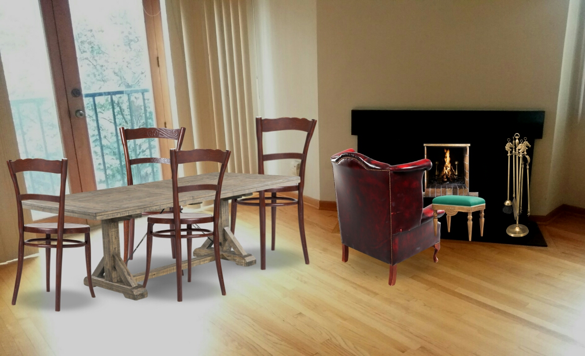
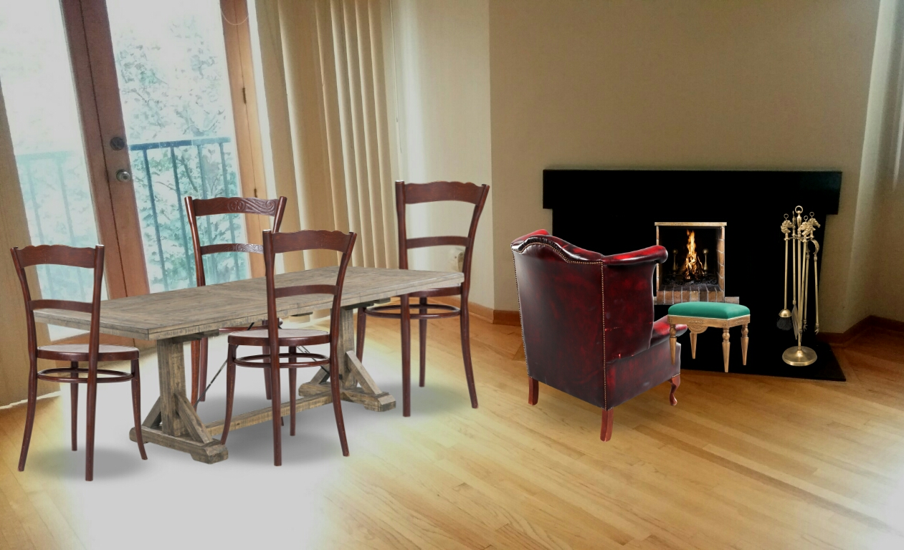
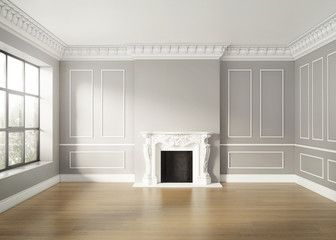
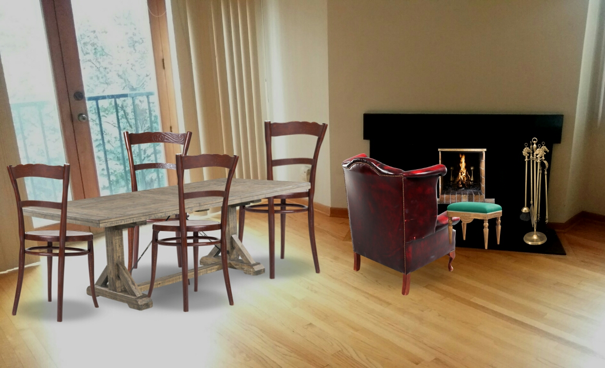
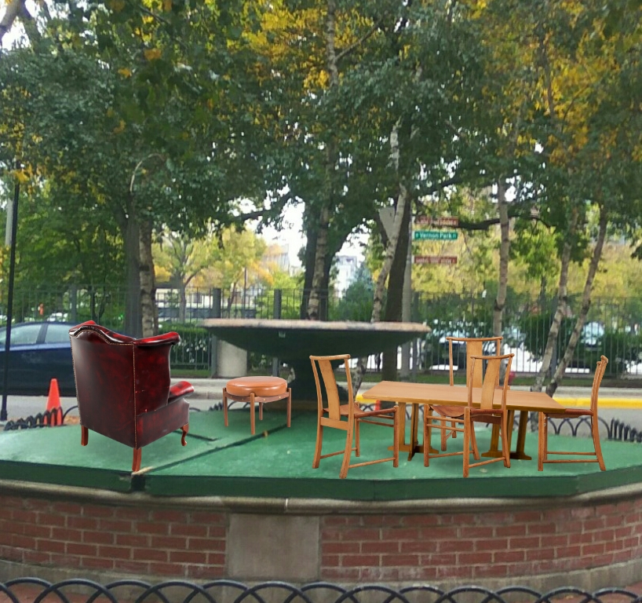
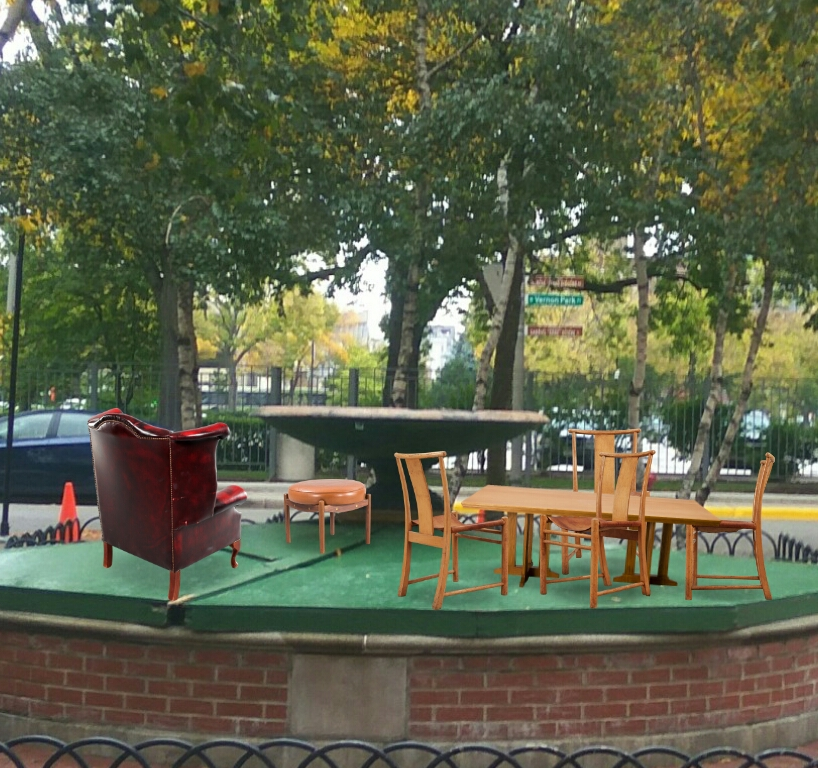

{kind=link}
 

In this post, we are going to explore an application of augmented reality: Designing our living space. As animals, we have three basic necessities: Food, Shelter and Cloth. As a civilisation, we have created systems in which a normal human with his/her hard work can arrange for them. When these three have been achieved, as a sophisticated organism, we make them look fancy/attractive based on our tastes. As a result, we have two booming industries of fashion and interior design. There are multiple products in the market which are aesthetically pleasing and are ergonomic in design. Now, every human has an image of himself/herself that he/she wants his surroundings to portray. Let's say a person is a soccer fan. You will find many soccer jersey's in that person's wardrobe and there will be multiple posters of the players/ teams that person likes. Now let me give you a scenario, you have to move-in to a new house. You are visiting it for the first time. What would be your thoughts? Answer: Your thought would be, how can I make this place look mine?
Now, you have seen the place and you already have some basic setup of posters, rugs, lamps, furniture in your mind. In old times, you would visit a furniture store and look for the closest fit to what you had in your mind. Now, you can look into the online stores and with great number of choices available your pain has eased a bit. But, even then you won't really know how it would look like in your room. When there is a need of immersive imagination, augmented reality comes to our rescue. For this, I used an application called Neybers (App Store,Google Play). For a simple hands-on experience, I moved furniture from my hall and took a picture and gave that picture to the app. The app gave me various types of furniture to choose and different orientations to place them. There was also a resizing option to scale it according to my needs. When I was satisfied with the furniture setup, the app gave me option of sharing it across various social media channels to get it reviewed. The scene that I chose was of a dining room. The scene depicted a dining table with a set of chairs. A comfortable sofa in front of fire place with a footrest in front to enjoy the warmth of fire. Following are the, before and after snapshots:

Doing that is boring!! The spirit of engineering is to push the limits. So to play with it, I went outside and tried to use the app. I went to a fountain which was turned off due to cold weather. One thought that came to mind was would it be possible that people would want to have food in the middle of a fountain. Imagine a day of hot summer, heat wave is exhausting, the sun is scorching but with the technology of a shield which blocks the water but allows the cold temperature to come inside would be a great relief. I had my inspiration and I created a similar scene with a dining table and a set of chairs in the middle of the fountain. Also, I would want to enjoy the fountain the same way I enjoy a fireplace. So, I put a sofa and footrest over there as well. This is how it looks:
 

Working on this application was an encouraging experience. It gave me an insight on how we can use basic augmented reality for various types of applications. For example, this concept has been applied for trying glasses. User uploads picture of his/her face and based on the glass you select it will virtually show how it would look on your face. This concept can be extended to try on clothes. This will reduce time to purchase clothes to a great extent. Apart from wearables, this concept can be applied to remodel things as well. For example, there is a huge market for customised vehicles. So, how your vehicle would look after customising will help make consumers make better decisions. Same goes for hair stylists as well. Looking someone else's hairstyle on a magazine and hoping when you get that haircut would look good on you should be unacceptable. This will help many teenager's stop making some bad decisions on their looks.
To conclude, the concept of re-disigning things virtually has a huge potential. The science behind space orientation, object detection and tracking using just a single camera is tough and hard to implement and is still a research topic. However, with more research we are getting better day by day. When this technology matures we will see it integrated on each and every aspect of consumer decision making. This will really help us making better decision. We will be able to make much informed decision, will be able to experiment with different types of setups and pick the one which best suits our needs.